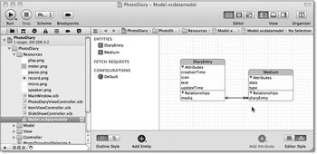

Zum Online-Shop
Zum Online-Shop
4.2 Core Data
Das Beispielprogramm dieses Kapitels besitzt im Gegensatz zum analogen Wecker eine Modellschicht mit eigenen Klassen. Sie stellen die Daten des Fototagebuchs dar. Die Applikation kann diese Daten aber nicht nur anzeigen und bearbeiten, sondern auch im nichtflüchtigen Speicher des Gerätes ablegen und von dort auch wieder laden. Das Fototagebuch verwendet für die Datenmodellierung und -speicherung das Apple-Framework Core Data.
Core Data ist eine Technologie, um persistente Objektgraphen in Applikationen zu implementieren. Ein Objektgraph besteht aus durch Relationships miteinander verbundenen Objekten, und Persistenz ist die dauerhafte Speicherung von Daten. Core Data stellt Relationships durch entsprechende Propertys dar. Jede Applikation lässt natürlich nur bestimmte Objektgraphen zu. Wie die zulässigen Graphen eines Programms aussehen, legt das Datenmodell fest.
Solche Datenmodelle lassen sich am einfachsten durch Graphen beschreiben. Vielleicht kennen Sie ja auch schon Entity-Relationship-Diagramme (ER-Diagramme) oder UML-Klassendiagramme, die Ähnliches leisten. In Xcode ist einen Datenmodelleditor integriert, der sowohl eine graphische als auch eine dialogorientierte Erstellung und Bearbeitung von Datenmodellen erlaubt. Die graphische Darstellung orientiert sich dabei an ER-Diagrammen.
4.2.1 Datenmodellierung
Im Projekt PhotoDiary auf der beiliegenden DVD finden Sie in der Gruppe Resources die Datei Model.xcdatamodeld. Sie enthält das Datenmodell des Fototagebuchs. Wenn Sie die Datei auswählen, sehen Sie das Datenmodell, wie in Abbildung 4.1 dargestellt.
Abbildung 4.1 Das Datenmodell in der Dialogdarstellung
Unter Entities finden Sie die Entitätstypen des Datenmodells. Ein Entitätstyp – häufig fälschlicherweise auch nur Entität genannt – beschreibt eine Objektklasse in einem Datenmodell. Sie enthält Attribute und ist durch Relationships mit anderen Entitätstypen verbunden. Im Fototagebuch ist jedem Entitätstyp eine gleichnamige Klasse zugeordnet. Das muss aber nicht immer so sein. Die Basisklasse aller Entitätstypen, NSManagedObject, reicht als Implementierung beliebiger Entitätstypen aus. Die Unterscheidung zwischen Entitätstypen und Klassen ist allerdings in der Praxis sekundär. Sie können sich also unter einem Entitätstyp ruhig so etwas wie eine Klasse vorstellen, die allerdings keine eigenen Methoden besitzt.
Durch die Buttongruppe Editor Style unten rechts im Xcode-Fenster können Sie auf die grafische Darstellung des Datenmodells umschalten. Die Diagrammdarstellung sehen Sie in Abbildung 4.2. Das Diagramm stellt Entitätstypen durch Kästen und Relationships durch Linien mit Pfeilenden dar. Die Kästen der Entitätstypen enthalten deren Namen als Titel und darunter die Namen der Attribute. Darunter sind die Namen der Relationships aufgeführt.
Abbildung 4.2 Diagrammdarstellung des Datenmodells
Das Datenmodell enthält zwei Entitätstypen: DiaryEntry und Medium. Während der erste Typ Tagebucheinträge beschreibt, dient der zweite zur Ablage von
Mediendaten. In dem Tagebuch sind das Bilder und Tonaufnahmen. Über den Button Add Entity können Sie dem Modell weitere Entitätstypen hinzufügen. Über den Datenmodellinspektor ( + + ) können Sie den Klassennamen festlegen, und über das Dropdownmenü Parent Entity den Obertyp eines Entitätstyps festlegen. Sie haben also in einem Datenmodell auch
die Möglichkeit der Vererbung.
+ + ) können Sie den Klassennamen festlegen, und über das Dropdownmenü Parent Entity den Obertyp eines Entitätstyps festlegen. Sie haben also in einem Datenmodell auch
die Möglichkeit der Vererbung.
Im Modell des Fototagebuchs verbinden zwei Relationships die beiden Entitätstypen miteinander, die eine Verbindungslinie darstellt. Das liegt daran, dass die beiden Relationships zueinander invers sind. In Core Data sollte jede Relationship auch immer ein inverses Pendant haben. Neue Relationships legen Sie in der Diagrammdarstellung analog zu Outlets im Interface Builder an, indem Sie bei gedrückter rechter Maustaste eine Verbindung zwischen den beteiligten Entitätstypen ziehen. Wenn Sie eine Relationship durch das Ziehen einer Verbindung erzeugen, legt der Modelleditor automatisch die inverse Relationship an.
Natürlich enthalten beide Entitätstypen auch noch einige Attribute, deren Datentypen
Sie in der Dialogansicht direkt festlegen können. Weitere Einstellungsmöglichkeiten
zu jedem Attribut finden Sie im Datenmodellinspektor. Dazu wählen Sie das Attribut
aus, drücken + + oder öffnen die Inspektorspalte auf der rechten Seite von Xcode und wählen dort das
Icon ganz rechts aus (siehe Abbildung 4.3).
Bei allen Attributen können Sie drei boolesche Eigenschaften setzen:
- Ein transientes Attribut wird nicht persistent gespeichert. Es geht also spätestens nach Programmende verloren.
- Ein optionales Attribut darf auch den Wert nil annehmen. Wenn Sie hingegen versuchen, ein nichtoptionales Attribut mit dem Wert nil zu speichern, liefert Core Data einen Fehler.
- Für indizierte Attribute legt Core Data einen Index an. Er kann Suchanfragen beschleunigen, die nach diesem Attribut filtern.
Neben der Festlegung des Datentyps erlaubt der Inspektor auch noch datentypabhängige Einstellungen für einen Standardwert und Werteinschränkungen. Bei Strings können Sie beispielsweise eine minimale und maximale Länge sowie einen regulären Ausdruck festlegen, auf den die Werte passen müssen.
Abbildung 4.3 Der Datenmodellinspektor für ein Stringattribut
Der Entitätstyp verweist über die One-To-Many-Relationship media auf die zugehörigen Medien. Ein wichtiges Unterscheidungskriterium für Relationships sind die möglichen Anzahlen der Elemente an beiden Enden. Wenn die Relationship auf höchstens ein Element verweist, können Sie sie durch eine Property des Zieltyps darstellen. Ist hingegen mehr als ein Element möglich, müssen Sie dafür einen Sammlungstyp verwenden; in Core Data ist das NSSet. Bei der One-To-Many-Relationship media kann also immer ein Tagebucheintrag auf mehrere Medien verweisen.
Die Many-To-One-Relationship diaryEntry weist jedem Medium genau einen Tagebucheintrag zu. Sie ist die inverse Relationship zu media. Es gibt außerdem noch Many-To-Many-Relationships, die dieses Datenmodell allerdings nicht verwendet. Die Pfeilenden an der verknüpften Entität zeigen die Wertigkeit der Relationships an. To-One- haben eine einfache und To-Many-Relationships haben eine doppelte Pfeilspitze. Sie können die Wertigkeit über den Datenmodellinspektor für die Relationship setzen (siehe Abbildung 4.4).
Bei Relationships können Sie neben dem Zielentitätstyp auch die inverse Relationship festlegen. Wie Attribute können Relationships ebenfalls transient und optional sein. Sie können im Inspektor nicht nur festlegen, ob es sich um eine To-One- oder To-Many-Relationship handelt, sondern auch bestimmen, auf wie viele Elemente sie mindestens und höchstens verweisen darf. Die Delete Rule legt schließlich fest, was mit dem Objekt bei Löschung des Zielobjekts passiert. Es stehen vier Möglichkeiten zur Auswahl, wie Core Data bei einer Löschung des Ursprungsobjekts mit den Zielobjekten umgehen soll:
- No Action: Die Zielobjekte werden nicht verändert.
- Nullify: Core Data löscht den Verweis der inversen Relationship auf das Ursprungsobjekt.
- Cascade: Löscht auch alle Zielobjekte, auf die das Objekt verweist.
- Deny: Core Data löscht das Objekt nur, wenn keine Zielobjekte existieren.
Abbildung 4.4 Der Datenmodellinspektor für Relationships
Die Relationship media verwendet kaskadierendes Löschen, weil die Medienobjekte zu dem jeweiligen Tagebucheintrag gehören. Wenn der Tagebucheintrag nicht mehr existiert, werden die Medien auch nicht mehr gebraucht. Wenn Sie hingegen ein Medium löschen, soll es aus der Medienmenge des Tagebucheintrags nur entfernt werden. Der Tagebucheintrag bleibt aber bestehen.
4.2.2 Implementierung von Entitätstypen
Das Fototagebuch stellt die Entitätstypen durch eigene Klassen dar, die Xcode direkt aus dem Datenmodell erzeugen kann. Dazu wählen Sie im Dialog zum Anlegen einer neuen Datei das Template NSManagedObject subclass unter dem Punkt Core Data aus.
| Tipp |
|
Den Ablauf dieses Dialogs können Sie verkürzen, in dem Sie vor dem Aufruf den zugrunde liegenden Entitätstyp auswählen. In diesem Fall brauchen Sie nämlich nur den Dateinamen festzulegen. Wenn Sie hingegen keinen Entitätstyp auswählen, können Sie die Klassen für mehrere Entitätstypen auf einmal erzeugen. Xcode zeigt Ihnen dazu entsprechende Auswahldialoge an. |
Die erzeugte Klasse enthält für jedes Attribut des Entitätstyps eine Property-Deklaration, für die Sie in der Implementierung aber keine Synthesize-Anweisung finden. Stattdessen enthält die Datei für jede Property eine Dynamic-Anweisung:
@dynamic icon;
@dynamic creationTime;
@dynamic updateTime;
@dynamic text;
@dynamic media;
Listing 4.5 Dynamic-Anweisungen für die Propertys der Klasse »DiaryEntry«
Im Gegensatz zu den Synthesize-Anweisungen haben diese Anweisungen keine Auswirkung auf das erzeugte Programm. Sie zeigen dem Compiler lediglich an, dass der Implementierungsteil der Klasse für diese Propertys keine expliziten Methodendefinitionen enthält. Stattdessen erfolgt der Zugriff auf die Attributwerte über Key-Value-Coding, wofür die Oberklasse NSManagedObject von DiaryEntry die entsprechenden Implementierungen besitzt.
Außerdem enthält die Headerdatei noch eine Kategorie mit vier Methoden, über die Sie die Objekte der Relationship media verändern können:
@interface DiaryEntry (CoreDataGeneratedAccessors)
- (void)addMediaObject:(Medium *)value
- (void)removeMediaObject:(Medium *)value
- (void)addMedia:(NSSet *)value
- (void)removeMedia:(NSSet *)value
@end
Listing 4.6 Kategorie mit Methoden
Auch diese Methoden implementiert Core Data über Key-Value-Coding. Da der Tagebucheintrag aber noch andere Operationen bei der Veränderung der Relationship ausführen soll, befindet sich diese Kategorie in der Implementierungsdatei der Klasse. Diese Methoden sind also privat.
4.2.3 Einbindung von Core Data
Um einen Objektgraphen mit Core Data persistent speichern zu können, müssen Sie drei Objekte anlegen. Das Datenmodell repräsentiert ein Objekt der Klasse NSManagedObjectModel, das das Fototagebuch über einen Lazy-Getter des Application-Delegates aus dem Ressourcenordner der Applikation lädt:
- (NSManagedObjectModel *)managedObjectModel {
if(managedObjectModel == nil) {
NSURL *theURL = [[NSBundle mainBundle]
URLForResource:@"Model" withExtension:@"momd"];
self.managedObjectModel =
[[[NSManagedObjectModel alloc]
initWithContentsOfURL:theURL] autorelease];
}
return managedObjectModel;
}
Listing 4.7 Laden des Datenmodells
Analog zu den XIB-Dateien übersetzt Xcode während des Buildprozesses die Modelldateien in ein anderes Format, das für die Ausführung günstiger ist. Aus diesem Grund hat die Ressource jetzt die Dateiendung .momd und nicht mehr .xcdatamodeld.
Das Application-Delegate erzeugt außerdem ein Objekt der Klasse NSPersistentStoreCoordinator über einen Lazy-Getter. Der Store-Koordinator verbindet die Entitätstypen eines Datenmodells mit einem Ablageort, den Unterklassen von NSPersistentStore beschreiben. In iOS gibt es drei mögliche Arten von Stores: SQLite-Datenbanken, Binärdateien und die nichtpersistente Ablage im Hauptspeicher. Das Fototagebuch verwendet eine SQLite-Datenbank. Neben dem Typ müssen Sie außerdem eine URL auf eine Datei im lokalen Dateisystem angeben. Die App legt diese Datei Diary.sqlite in ihrem Dokumentenordner ab. Diesen Ordner können Sie so, wie in Listing 4.8 angegeben ist, ermitteln.
- (NSURL *)applicationDocumentsURL {
NSFileManager *theManager = [NSFileManager defaultManager];
return [[theManager URLsForDirectory:NSDocumentDirectory
inDomains:NSUserDomainMask] lastObject];
}
Listing 4.8 Bestimmung des Dokumentenordners einer Applikation
Ein Store-Koordinator kann die Entitäten eines Datenmodells in unterschiedlichen Stores ablegen. Das können Sie über Konfigurationen festlegen. Das Fototagebuch macht davon allerdings keinen Gebrauch. Das Fototagebuch verwendet einen SQLite-Store. Es legt also die Entitäten in Tabellen einer SQL-Datenbank ab. Sie können einen neuen Store über die Methode
addPersistentStoreWithType:configuration:URL:options:error:
des Store-Koordinators anlegen. Sofern Sie Ihre Entitäten alle im gleichen Store ablegen möchten, dürfen Sie den Wert nil für den Konfigurationsparameter verwenden. Die URL gibt den Ablageort des Stores an. Momentan unterstützt Core Data nur Dateien im lokalen Dateisystem, weswegen Sie hier immer eine Datei-URL angeben müssen. Sie erkennen diese URLs an dem Protokoll beziehungsweise dem Präfix file.
- (NSPersistentStoreCoordinator *)storeCoordinator {
if(storeCoordinator == nil) {
NSURL *theURL = [[self applicationDocumentsURL]
URLByAppendingPathComponent:@"Diary.sqlite"];
NSError *theError = nil;
NSPersistentStoreCoordinator *theCoordinator =
[[NSPersistentStoreCoordinator alloc]
initWithManagedObjectModel:
self.managedObjectModel];
if([theCoordinator
addPersistentStoreWithType:NSSQLiteStoreType
configuration:nil URL:theURL options:nil error:&theError]) {
self.storeCoordinator = theCoordinator;
}
else {
NSLog(@"storeCoordinator: %@", theError);
}
[theCoordinator release];
}
return storeCoordinator;
}
Listing 4.9 Erzeugung des Store-Koordinators
Mit dem Store-Koordinator können Sie einen Objektkontext erstellen, über den Sie Ihre Objekte verwalten.
4.2.4 Der Objektkontext
Der Objektkontext ist eine Art Raum, in dem ihre persistenten Objekte leben. Sie können in den Kontext Objekte aus der Datenhaltung hineinladen, neue Objekte erzeugen und enthaltene Objekte verändern oder löschen. Sie können die Änderungen schrittweise zurücknehmen (Undo) und auch die Rücknahme wieder zurücknehmen (Redo). Das alles hat aber zunächst keine Auswirkungen auf die Datenhaltung. Um die Änderungen Ihres Objektgraphen dauerhaft zu machen, müssen Sie den kompletten Objektkontext sichern. Der Objektkontext ist also ein »Schmierpapier«, auf dem Sie Ihren Objektgraphen verändern können, und nur, wenn Ihnen das Ergebnis gefällt, machen Sie eine Reinzeichnung von dem Graphen. Die Erzeugung eines Objektkontextes ist denkbar einfach. Sie erzeugen ein Objekt der Klasse NSManagedObjectContext und weisen diesem über die Property persistentStoreCoordinator einen Store-Koordinator zu.
Eine neue Entität – so heißen die Objekte eines Entitätstyps – erzeugen Sie aber nicht über eine Alloc-Init-Kette, sondern lassen sie über die Klassenmethode insertNewObjectForEntityForName:inManagedObjectContext: der Klasse NSEntityDescription anlegen. Der erste Parameter enthält dabei den Namen des gewünschten Entitätstyps und der zweite den Objektkontext, der das neue Objekt aufnimmt. Sie brauchen danach das Objekt also nicht mehr selber in einen Kontext einfügen. Jedes Objekt kann aber nur zu einem Kontext gehören.
Über die Methode deleteObject: können Sie ein Objekt aus einem Objektkontext löschen. Für die Aktualisierung von Objekten gibt es keine gesonderten Methoden im Objektkontext. Sie weisen den Propertys des Objekts einfach nur neue Werte zu. Der Objektkontext bekommt diese Änderungen automatisch mit.
Die Änderungen des Objektgraphen im Objektkontext können Sie dauerhaft durch einen Aufruf der Methode save: sichern. Das Fototagebuch schreibt also durch diesen Aufruf alle Änderungen in die SQLite-Datenbank. Der Parameter ist ein Zeiger auf eine Objektreferenz der Klasse NSError. Über diesen gibt die Methode eventuell aufgetretene Fehler beim Speichern zurück. Typische Fehler sind hierbei die Verletzung der Integritätsbedingungen des Entitätstyps. Wenn Sie beispielsweise versuchen, einen Tagebucheintrag ohne Erzeugungszeit zu speichern, liefert der Aufruf einen Fehler, da dieses Attribut obligatorisch ist.
Falls die genaue Fehlerursache Sie nicht interessiert, dürfen Sie auch NULL für diesen Parameter angeben. Sie können auch aus dem Rückgabewert des Methodenaufrufs den Erfolg ermitteln. Ein typischer Methodenaufruf mit Rückgabe des Fehlerobjekts sieht also so aus:
NSError *theError = nil;
if(![theContext save:&theError]) {
// Verarbeitung des Fehlers
}
Listing 4.10 Sichern eines Objektkontextes mit Fehlerermittlung
| Zeiger auf Objektreferenzen |
|
In Cocoa Touch gibt es viele Methoden, die wie die Methode save: einen Zeiger auf eine Objektreferenz übergeben bekommen. Diese Zeiger sind C-Pointer und keine Objektreferenzen, weswegen Sie dafür NULL und nicht nil verwenden sollten. Umgekehrt sollten Sie Objektreferenzen auch nicht auf NULL setzen. Diese Unterscheidung ist eine Konvention, und ihre Missachtung führt (derzeit) zu keinen Compiler- oder Laufzeitfehlern. Es zeugt aber von gutem Stil, wenn Sie sich daran halten. |
Über die Methode reset können Sie alle Änderungen in einem Objektkontext rückgängig machen. Dabei werden alle Objekte aus dem Kontext entfernt. Der Kontext befindet sich also nach dem Aufruf in seinem ursprünglichen Zustand.
4.2.5 Die Nachrichten des Objektkontexts
Sie können sich über Änderungen Ihrer Objekte im Objektkontext informieren lassen. Delegates sind dafür aber ungeeignet, da der Kontext ja Modellobjekte verwaltet. Stattdessen versendet er Benachrichtigungen, sodass er auch mehrere Controller auf einmal benachrichtigen kann. Es gibt drei Arten von Benachrichtigungen.
Der Objektkontext sendet eine Benachrichtigung vom Typ NSManagedObjectContextObjectsDidChangeNotification, wenn Sie die Attribute einer Entität im Kontext verändern. Vor dem Sichern versendet er eine Benachrichtigung vom Typ NSManagedObjectContextWillSaveNotification und danach eine NSManagedObjectContextDidSaveNotification. Das Objekt der Benachrichtigung ist dabei immer der Objektkontext. Außer bei der Will-Save-Notification enthält das User-Info-Dictionary die geänderten Objekte unter den Schlüsseln NSInsertedObjectsKey, NSUpdatedObjectsKey und NSDeletedObjectsKey. Diese Benachrichtigungen erleichtern es Ihnen, die Anzeigen in Ihren Viewcontrollern aktuell zu halten. Sie können beispielsweise die Zellen in einem Tableview relativ einfach über diese Benachrichtigungen aktualisieren lassen. Wie das geht, beschreibt Abschnitt 4.5, »Tableviews und Core Data«.
4.2.6 Anlegen und Ändern von Entitäten in der Praxis
In dem Beispielprogramm Fototagebuch gibt es einen eigenen Viewcontroller für die Bearbeitung eines Tagebucheintrags. Er hat die Klasse ItemViewController. Über diesen Controller können Sie neue Einträge anlegen und bestehende Einträge bearbeiten.
Abbildung 4.5 Anlegen eines neuen Eintrags
Ein Eintrag kann einen Text, ein Bild und einen Ton enthalten. Außerdem enthält der Eintrag noch das Erzeugungs- und das Aktualisierungsdatum. Diese beiden Werte setzt der Eintrag automatisch vor dem Speichern. Da der Controller einen Eintrag verwaltet, besitzt er eine Property diaryEntry der Klasse DiaryEntry. Diese Property kapselt den Zugriff auf eine interne Property item, die den Tagebucheintrag hält. Außerdem besitzt der Controller eine private Property managedObjectContext, die auf seinen eigenen Objektkontext verweist, den die Methode awakeFromNib erzeugt und initialisiert.
Bei der Anzeige des Controllers gibt es zwei Fälle. Entweder möchte der Nutzer einen neuen Eintrag anlegen oder einen bestehenden verändern. Vor der Anzeige setzt der Aufrufer dazu die Property diaryEntry entsprechend – entweder auf den zu verändernden Eintrag oder auf nil. Anhand des Wertes kann der Setter entscheiden, wie er den Objektkontext verändern muss.
Wenn der Wert nil ist, muss er einen neuen Eintrag erzeugen und in den Objektkontext legen. Andernfalls muss er überprüfen, ob der Eintrag bereits in dem Objektkontext des Controllers liegt. Falls das nicht der Fall ist, muss er das Objekt in den Kontext laden. Dazu verwendet die Implementierung die Methode objectWithID: des Kontexts. Jede CoreData-Entität hat eine eindeutige Kennung. Sie können diese über die Methode objectID der Klasse NSManagedObject jeder Entität abfragen. Den auf diese Weise geladenen Eintrag müssen Sie natürlich der Property item zuweisen, da Sie ja mit ihm weiterarbeiten möchten. Den Code zur Vorbereitung des Objektkontextes finden Sie in Listing 4.11.
- (void)setDiaryEntry:(DiaryEntry *)inDiaryEntry {
[self.managedObjectContext reset];
if(inDiaryEntry == nil) {
self.item = [NSEntityDescription
insertNewObjectForEntityForName:@"DiaryEntry"
inManagedObjectContext:self.managedObjectContext];
}
else {
self.item = inDiaryEntry;
}
}
Listing 4.11 Vorbereitung des Objektkontexts
Das Speichern des Eintrags ist dagegen sehr einfach. Sie rufen dafür die Methode save: des Objektkontexts des Controllers auf. Das geschieht im Controller in der Methode saveItem, die die Methode viewWillDisapper: aufruft. Sie speichert allerdings keine leeren Einträge.
Der Controller kann jetzt den Eintrag verändern, indem er die Attribute des Eintrags setzt. Der Eintrag hat zwei Zeitstempel für den Erzeugungs- und den letzten Aktualisierungszeitpunkt des Eintrags. Diese Werte können Sie automatisch setzen, indem Sie in der Klasse DiaryEntry zwei Methoden der Klasse NSManagedObject überschreiben. Wenn Sie ein neues Objekt in einen Objektkontext einfügen, ruft Core Data die Methode awakeFromInsert des Objekts auf. Sie können diese Methode dazu verwenden, die Erzeugungs- und Aktualisierungszeit zu setzen.
- (void)awakeFromInsert {
[super awakeFromInsert];
NSDate *theDate = [NSDate date];
[self setPrimitiveValue:theDate forKey:@"creationTime"];
[self setPrimitiveValue:theDate forKey:@"updateTime"];
}
Listing 4.12 Vorbelegung der Erzeugungs- und Aktualisierungszeit
Die Aktualisierungszeit muss außerdem beim Sichern des Objekts aufgefrischt werden. Das können Sie über die Methode willSave bewerkstelligen. Der Name dieser Methode ist allerdings etwas missverständlich. Core Data ruft sie auf, bevor die Änderungen des Objekts in der Datenhaltung gesichert werden. Dazu zählt auch das Löschen der Entität. Sie können diesen Sonderfall aber über die Methode isDeleted abfragen.
- (void)willSave {
[super willSave];
if(!self.isDeleted) {
NSDate *theDate = [NSDate date];
[self setPrimitiveValue:theDate forKey:@"updateTime"];
}
}
Listing 4.13 Erneuerung der Aktualisierungszeit beim Sichern
Die Methoden in Listing 4.12 und Listing 4.13 benutzen beide die Methode setPrimitiveValue:forKey: anstatt der Setter. Der Setter hat hier Nebeneffekte, die im Falle der Methode willSave sogar zu einer Endlosrekursion führen.
Ihr Kommentar
Wie hat Ihnen das <openbook> gefallen? Wir freuen uns immer über Ihre freundlichen und kritischen Rückmeldungen.


{kind=link}
{kind=link}
{kind=link}
{kind=link}
{kind=link}